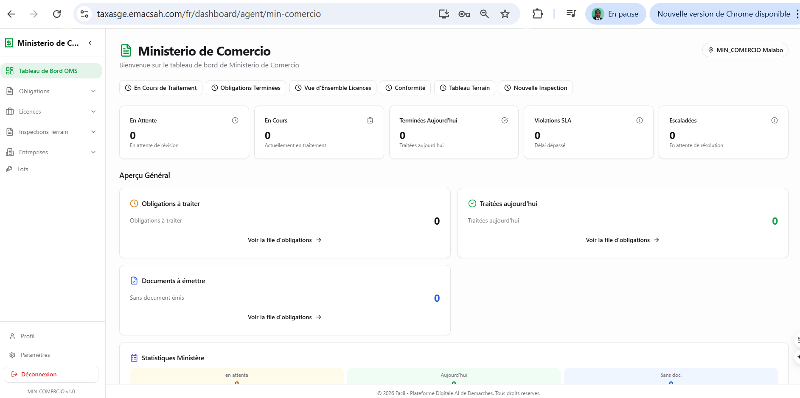
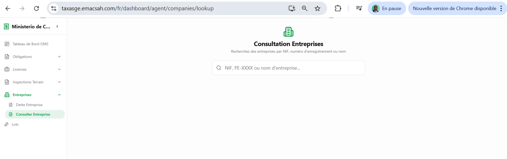
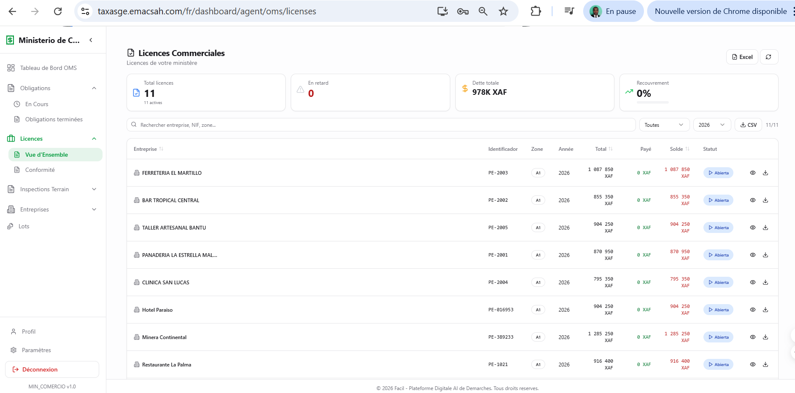
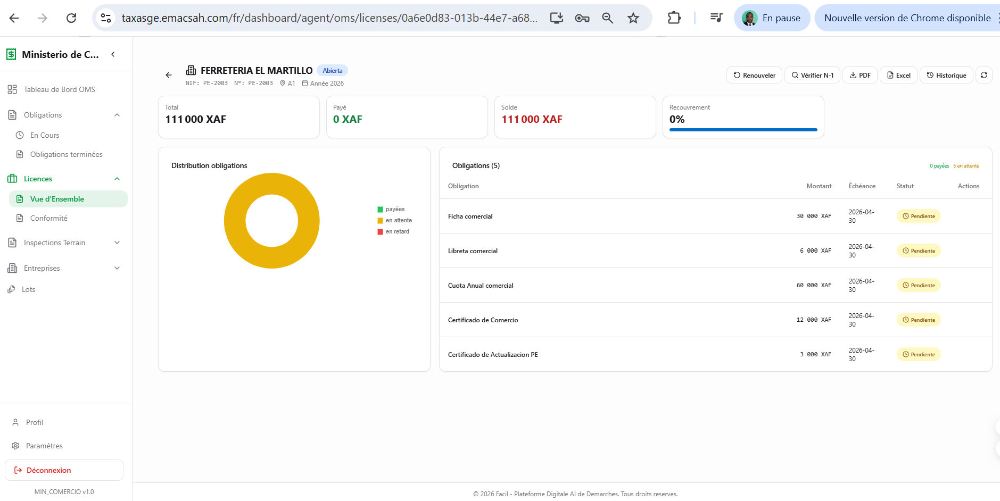
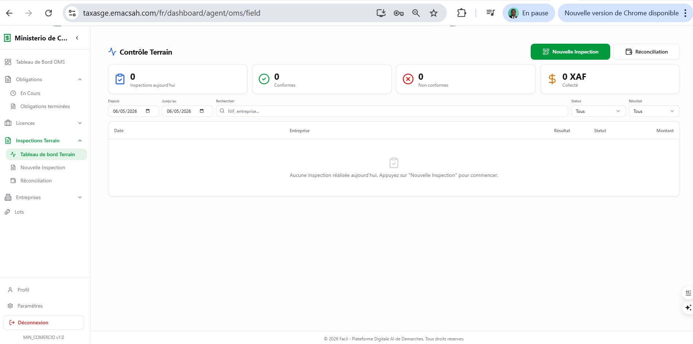
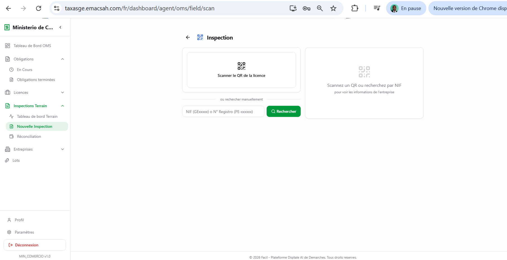
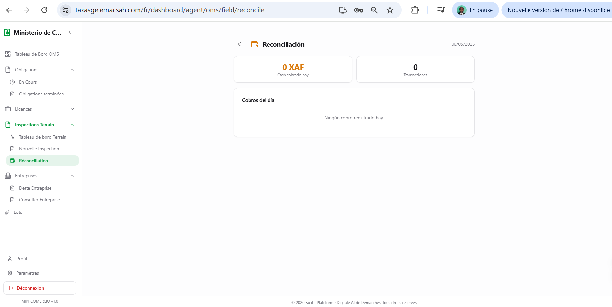
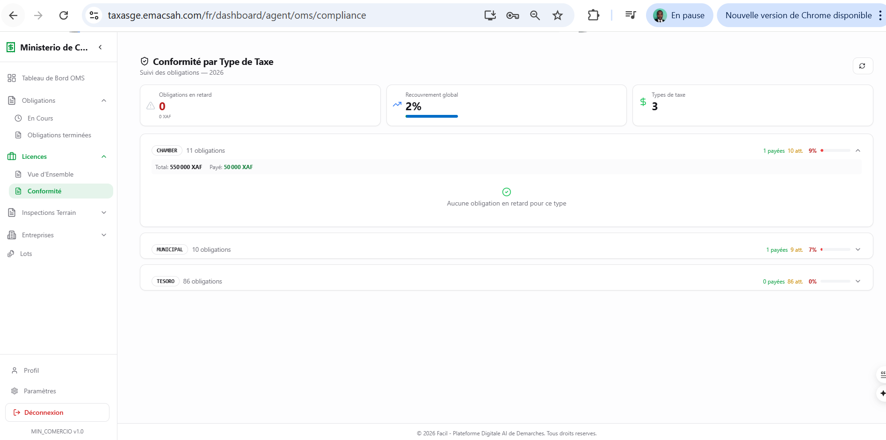
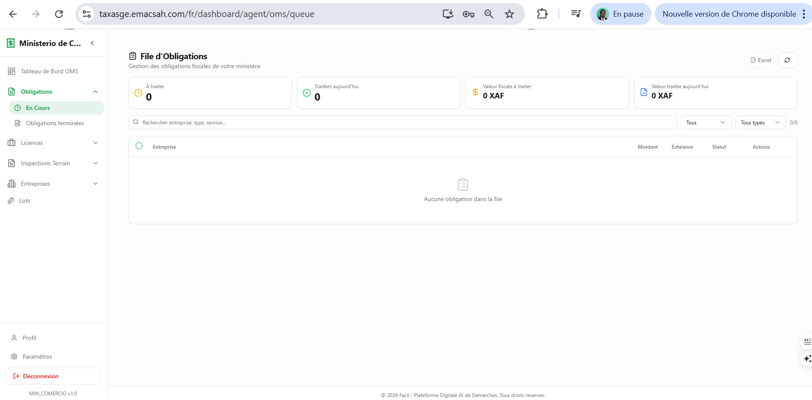
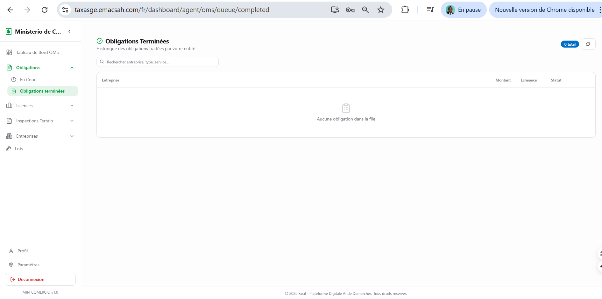

Agente OMS: procesamiento post-pago de obligaciones bundle
OMS (Obligation Management System) es el módulo interno de Facil que trata las obligaciones de licencias comerciales bundle después del pago. No tiene relación con la salud — el acrónimo coincide pero refiere al sistema de gestión de obligaciones definido en licenses.py. Cuando un comerciante paga su bundle (página 26), las obligaciones individuales (impuestos Tesoro, tasas Ayuntamiento, cotizaciones Cámara, impuestos sectoriales por ministerio) se distribuyen entre agentes según el modo de procesamiento configurado: Mode A — per_line (cada obligación va al ministerio competente) o Mode B — consolidated (un agente polyvalent agent_oms_polyvalent trata todo agregado).
1. Dashboard del agente OMS
El dashboard muestra los KPIs específicos del procesamiento bundle: número de obligaciones en cola, conformidad por fee_type (TESORO / MUNICIPAL / CHAMBER), licencias comerciales activas, tiempo medio de procesamiento. Las acciones rápidas dan acceso directo a las funciones más frecuentes: nueva inspección terreno, consulta de empresa por NIF, lista de licencias, conformidad por tipo de tasa.

2. Consulta de empresas
El menú «Consulta empresas» permite buscar una empresa por NIF, número de registro mercantil o nombre comercial. Útil cuando el agente recibe una llamada del comerciante o necesita auditar el historial bundle de un establecimiento antes de una inspección terreno.

3. Licencias comerciales bundle
La pantalla «Licencias comerciales» lista todas las licencias gestionadas por el módulo OMS, con sus identificadores, su empresa propietaria, su saldo de obligaciones (número de obligaciones bundle no pagadas) y su estado (en validez, vencida, en renovación, suspendida).

Hacer clic en una licencia abre la vista detallada con el desglose por obligación (tasa Tesoro, tasa Ayuntamiento, cotización Cámara, impuesto sectorial ministerial) y la opción de regenerar el certificado PDF de la licencia.

4. Tablero de inspecciones del día
El menú «Inspecciones» abre el tablero de control terreno con todas las inspecciones del día (programadas y efectuadas). Las inspecciones OMS no son sanitarias — son visitas comerciales para verificar que el comerciante está al día de sus obligaciones bundle y eventualmente collectar los pagos pendientes en el terreno (Mobile Money o cash). Cada inspección muestra: empresa visitada, dirección, hora prevista, conformidad observada (si ya hecha), tasas collectadas (si aplicable).

5. Iniciar una nueva inspección comercial
Para empezar una inspección, el agente puede escanear el QR de la licencia comercial pegado en el establecimiento (caso típico cuando llega al local) o buscar el NIF manualmente desde la oficina. El sistema valida el QR contra la base de datos y abre la ficha de inspección preparada con los datos pre-rellenados (obligaciones pendientes, importes esperados, historial bundle del comerciante).

6. Reconciliación de cobros del día
Al final de la jornada, el agente que ha collectado obligaciones en efectivo durante las inspecciones terreno debe reconciliar su caja: la suma de los cobros registrados en cada inspección bundle debe coincidir con el efectivo en su poder. La pantalla de reconciliación muestra las diferencias y permite generar un recibo agregado a depositar al cajero. Esto es crítico para evitar discrepancias entre el sistema OMS y el flujo Tesoro (página 65).

7. Conformidad por tipo de obligación (fee_type)
La pantalla «Conformidad» muestra el porcentaje de conformidad de las empresas por fee_type (campo del modelo bundle en bundles.py): CHAMBER (cotizaciones Cámara de Comercio), MUNICIPAL (tasas Ayuntamiento), TESORO (impuestos Tesoro Público). Útil para detectar las categorías con mayor índice de retraso de pago y orientar las acciones de control.

fee_type (CHAMBER, MUNICIPAL, TESORO).8. Cola de obligaciones
Las obligaciones bundle entran en la cola OMS tras el pago. La cola muestra las obligaciones « en curso » (en espera de procesamiento por un agente) y las « terminadas » (procesadas, validadas, archivadas). Cada obligación tiene una prioridad calculada según el fee_type, el importe y el tiempo de espera. Importante : la asignación a un agente respeta el Mode A (per_line — cada fee_type va a su ministerio) o el Mode B (consolidated — todo va al agent_oms_polyvalent), configurado al nivel del bundle.


9. Roles asociados al módulo OMS
Diferenciación de los roles OMS
Varios roles intervienen en el procesamiento OMS según el modo configurado (OMS_PROCESSOR_ROLES en oms_agent_service.py):
agent_tesoro+supervisor_tesoro— obligaciones fee_type=tesoro (página 65)agent_ayuntamiento+supervisor_ayuntamiento— obligaciones fee_type=municipal (página 64)agent_camara+supervisor_camara— obligaciones fee_type=chamber (página 64)- 6 ministerios sectoriales (
agent_min_comercio,agent_min_hacienda,agent_min_informacion,agent_min_turismo,agent_min_agricultura,agent_min_electricidad) — Mode A per_line ministerial agent_oms_polyvalent— Mode B consolidated (esta página describe principalmente este rol).supervisor_tesorotambién ve esta cola.